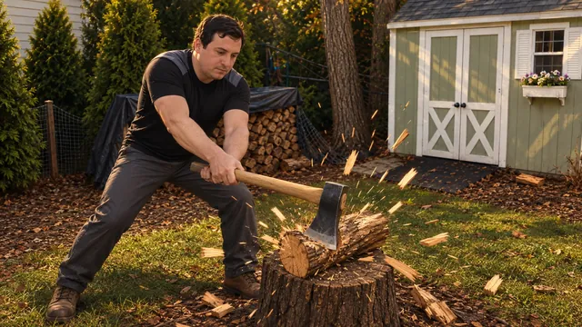
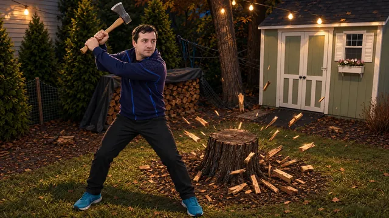

One brief, four AI coding harnesses: Codex, Claude Code, DeepSeek and Gemini 4 Argon. Play their backyard axe games right now, alone or with a friend. Gemini’s is still being built.
Play
Pick a harness
Each Play button opens that harness’s current build: for Codex, Claude Code and DeepSeek that is Assets v2 with online co-op and voice chat; for Gemini 4 Argon it is its newest in-progress build. The classic (pre-assets) builds stay one tap away.


Gemini
Backyard Lumberjack RPG
- Finished · coop-voice-release
- Not reviewed
Co-op + voice chat build: two-player online co-op with opt-in proximity voice chat. Same prompts, same order as the other three. Cost: est. $67.46 (est.: $53.55 on a paid Gemini API key, $13.91 on a Google login).
Play co-op GeminiClick inside a game to start its audio. The games need WebGL 2; a desktop browser with a mouse is recommended. They load three.js from a CDN, so they need internet access. Review scores are for earlier classic builds: see Results.
Play together
Online co-op and proximity voice chat
All four games, Codex, Claude Code, DeepSeek and Gemini 4 Argon, now have two-player online co-op, with optional voice chat that gets quieter the farther apart you are. All four got the same co-op brief, then the same voice chat brief.
- Two players, one yard. Fell trees together. Damage adds up on the same tree, and it falls on both screens.
- Shared rewards. Whoever chops the tree or splits the log gets the full XP and coins, and the partner gets half. Each player keeps their own save.
- Pick a character. Each player can play Sergey or Alex, in either of his two outfits.
- Proximity voice chat. It’s off until you turn it on. Close up it’s full volume, then it fades to silence about 25 m away.
How to play co-op
- Open the Co-op menu. Click Co-op in the game. It’s there at launch and during play.
- Host. One player picks Host a game and gets a 5-character room code. Send the code to your friend, or use Copy invite link.
- Join. The other player opens the same game, types the code into the Co-op menu and clicks Join. An invite link fills in the code for you, but you still click Join.
- Voice (optional). Turn on Proximity voice chat in the Co-op menu, before you host or join or at any time later. Each player has to opt in and allow microphone access when the browser asks. With it off, the game never touches your microphone.
Connection notes. Co-op is peer-to-peer (WebRTC). It uses the free PeerJS cloud server only to introduce the two browsers, and STUN to find a route between them. There is no relay (TURN) server, so players behind a strict NAT, such as some office, school or mobile networks, may not be able to connect. It works best in two different browsers or on two devices. Two tabs of the same browser on one machine also work for a quick try.
- Play co-op Codex Backyard: Find the grain
- Play co-op Claude Backyard Log Splitter
- Play co-op DeepSeek American Split
- Play co-op Gemini Backyard Lumberjack RPG
Release check: automated test results on the merged builds
| Harness | Game | Build | Automated check | FPS NJ low / Tiraspol low / Tiraspol high | Co-op + voice rounds |
|---|---|---|---|---|---|
| Codex CLI | Backyard: Find the grain | d9215ba | passed | 52.7 / 40.7 / 16.7 | 3 runs, 3.73 h, $3.78 |
| Claude Code | Backyard Log Splitter | c7b88ab | passed | 48.6 / 47.1 / 0.5 | 3 runs, 4.36 h, $17.25 |
| DeepSeek Harness | American Split | 550fa30 | passed | 17.8 / 24.5 / 2.2 | 3 runs, 1.19 h, $0.81 |
| Gemini 4 Argon | Backyard Lumberjack RPG | 76a7694 | passed | 20.3 / 20.5 / 23.6 | 4 runs, 6.22 h, est. $14.05 |
The check ran on each merged build after release. It replays the Assets v2 check, plays a full two-player co-op session including every voice chat step, and runs the voice module’s 360 unit checks. It ran in headless Chrome with software rendering and no GPU, so FPS are far below what a real graphics card gives. Voice was tested with a simulated microphone, and the two players were linked by an in-page loopback, not a real network. Round costs are in the totals under The bill. Claude’s are reported by the tool, and Codex’s and DeepSeek’s are token-priced (list-price equivalents). Gemini 4 Argon’s are est. (measured tokens × list price, run on a paid Gemini API key) and kept apart from the totals; its release check ran on Oct 25.
Assets v2
Two backyards, two outfits
All four harnesses got the same upgrade: a shared pack of real 3D assets that each built into its own game.
- Sergey, the lumberjack you play. A black tee by default, and a navy-and-blue zip jacket as the alternate costume.
- Two settings. A New Jersey backyard with a sage-green shed and a chopping stump, and a backyard in Tiraspol, Transnistria, with the gold domes of a cathedral on the skyline.
- New trees, standing all around the yard.
- Walk the yard. Walk around, chop down any tree, then split the logs at the stump.
- Four axes: Sergey’s axe, a double-bit, a maul and a golden axe.
New Jersey
A sage-green shed, a woodpile and the chopping stump.


Tiraspol, Transnistria
A walled backyard with the cathedral’s gold domes on the skyline.
Key art: AI-generated (GPT) illustrations of Sergey, not in-game footage. In-game shots of every build are in the milestones gallery; FPS, load times and known issues are under Results.


Results
Scores and cost at a glance
Scores are from the Round Two video review of earlier classic builds of Codex, Claude Code and DeepSeek; Gemini 4 Argon joined later and is not reviewed yet. Costs are whole-project totals from the run log: reported by the tool, token-priced (recorded tokens × list price) or est. where tokens were not recorded.
Codex
Round Two score 8/10 · Great
Cost loading…
Claude
Round Two score 7/10 · Good
Cost loading…
DeepSeek
Round Two score 6/10 · Okay
Cost loading…
Gemini 4 Argon
Not reviewed yet · in progress
Cost loading…
Login-based, not billed: est. from measured tokens × list price, kept out of the other totals.
Codex, Claude Code and DeepSeek figures are whole-project totals. Gemini 4 Argon is still being built, so its figure is a running est. and is not added to theirs.
Watch
Quick intro
A short tour of Chopperman: meet Sergey and see the Assets v2 games by Codex, Claude Code and DeepSeek (the video was made before Gemini 4 Argon joined). The full Round Two review video is on the Results page.
Quick intro · meet Sergey and the Codex, Claude Code and DeepSeek Assets v2 games.